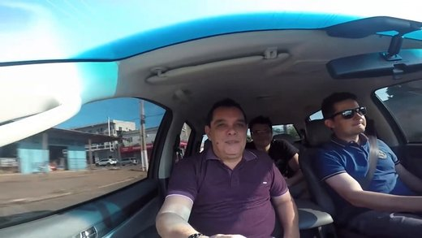

00:00:19.086
Emanuel Júlio no banco do passageiro com dois companheiros de viagem no carro e edificações urbanas visíveis pela janela.
Local não identificado
Na abertura, o apresentador apresenta a equipe que o convidou a conhecer Santarém Miri. O trajeto urbano em que a cena foi gravada não é nomeado.
Transcrição · 00:00:00 | 00:00:10
Turismo Aqui — quadro de vídeo publicado no YouTube